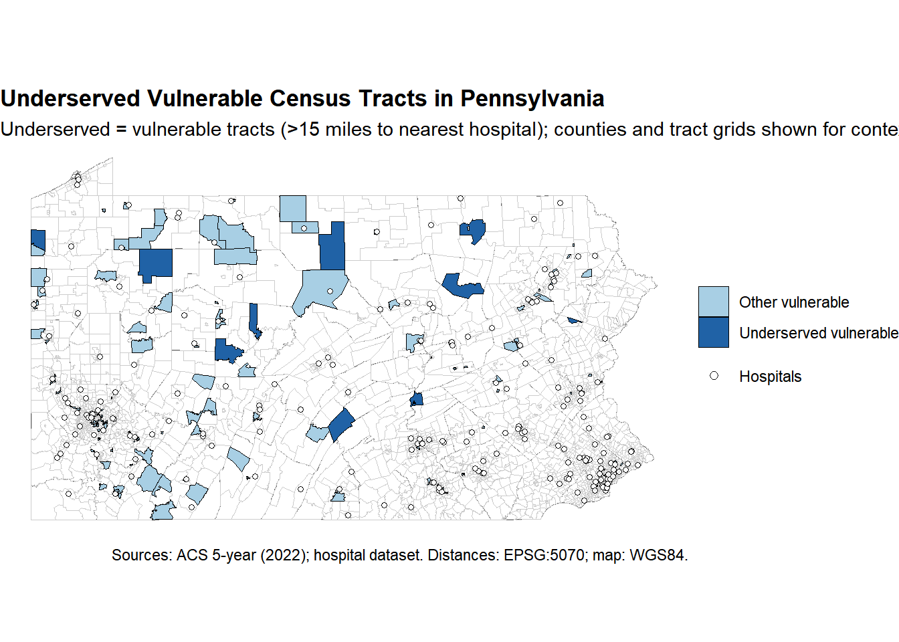
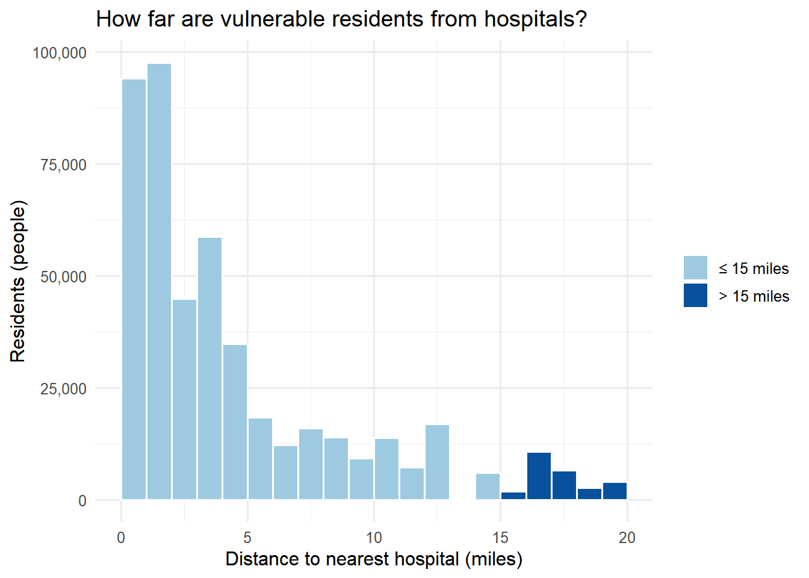
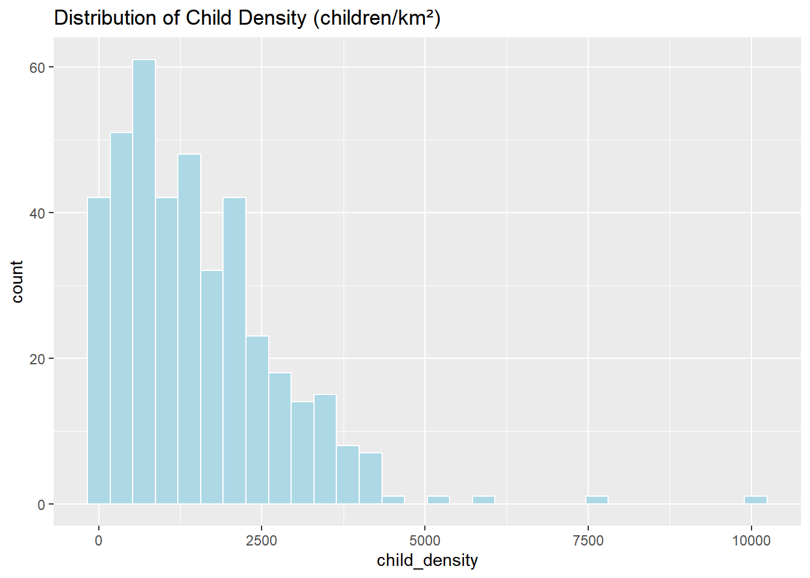
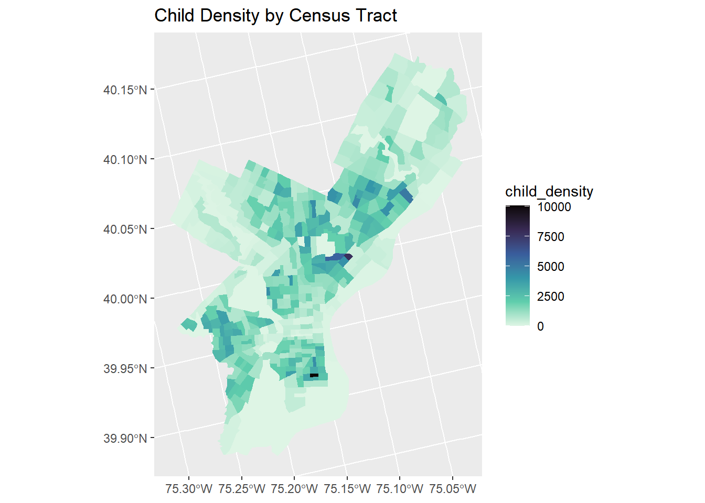
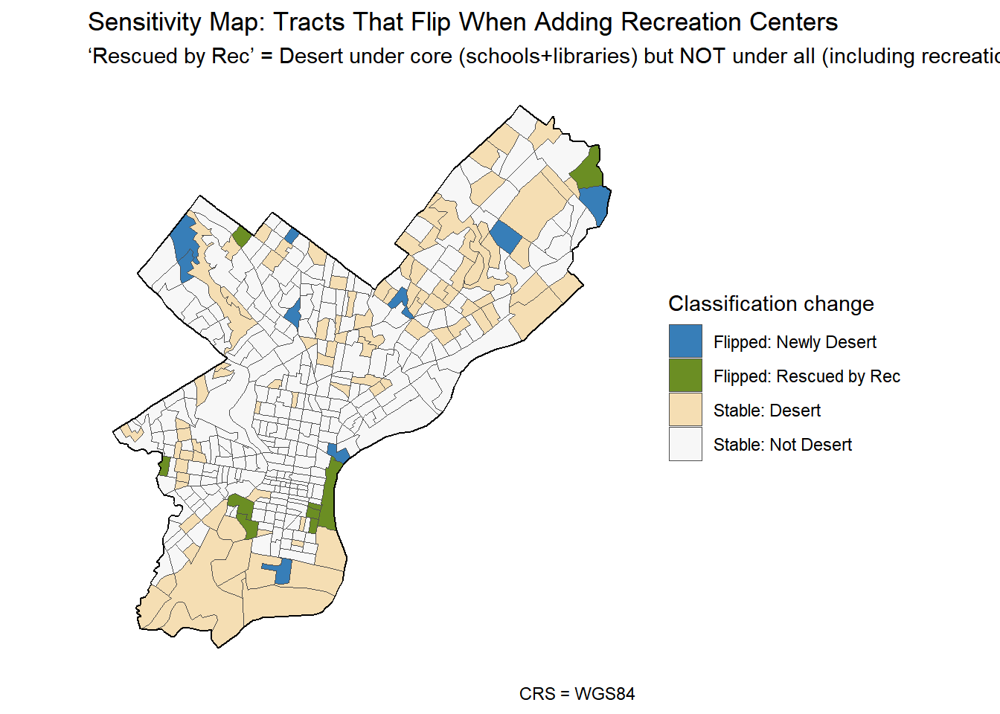

Learning Objectives: - Apply spatial operations to answer policy-relevant research questions - Integrate census demographic data with spatial analysis - Create publication-quality visualizations and maps - Work with spatial data from multiple sources - Communicate findings effectively for policy audiences
Part 1: Healthcare Access for Vulnerable Populations
Research Question
Which Pennsylvania counties have the highest proportion of vulnerable populations (elderly + low-income) living far from hospitals?
Your analysis should identify counties that should be priorities for healthcare investment and policy intervention.
Required Analysis Steps
Complete the following analysis, documenting each step with code and brief explanations:
Step 1: Data Collection (5 points)
Load the required spatial data: - Pennsylvania county boundaries - Pennsylvania hospitals (from lecture data) - Pennsylvania census tracts
What coordinate reference system is each dataset in?
Pennsylvania county boundaries is in EPSG:3857(WGS 84 / Web-Mercator, meters), Pennsylvania hospitals is in EPSG:4326(WGS 84 geographic, degrees), and Pennsylvania census tracts is in EPSG:4269(NAD83 geographic, degrees).
Step 2: Get Demographic Data
Use tidycensus to download tract-level demographic data for Pennsylvania.
Required variables: - Total population - Median household income - Population 65 years and over (you may need to sum multiple age categories)
Your Task:
Code
# Get demographic data from ACS## 1)Reach the datacore_vars <-c(total_pop ="B01003_001",median_income ="B19013_001")acs_core <-get_acs(geography ="tract",state ="PA",variables = core_vars,year =2022,survey ="acs5",output ="wide",geometry =FALSE) %>%transmute( GEOID,total_pop = total_popE,median_income = median_incomeE )## 2) Calculate the population 65 years and overage65_vars <-c(sprintf("B01001_%03d", 20:25), sprintf("B01001_%03d", 44:49))acs_65_wide <-get_acs(geography ="tract", state ="PA", variables = age65_vars,year =2022, survey ="acs5") %>%select(GEOID, variable, estimate) %>%pivot_wider(names_from = variable, values_from = estimate)acs_65plus <- acs_65_wide %>%mutate(non_na_bins =rowSums(!is.na(across(all_of(age65_vars)))),over65 =if_else( non_na_bins ==0, NA_real_,rowSums(across(all_of(age65_vars)), na.rm =TRUE) ) ) %>%select(GEOID, over65)# Join to tract boundariesoptions(tigris_progress =FALSE, tigris_use_cache =TRUE)pa_tracts <-tracts(state ="PA", year =2022, cb =TRUE, class ="sf")pa_tracts_joined <- pa_tracts %>%left_join(acs_core, by ="GEOID") %>%left_join(acs_65plus, by ="GEOID") %>%mutate(over65_share =if_else(!is.na(total_pop) & total_pop >0, over65 / total_pop, NA_real_) )## 2) Count the missing data and medium data of incomeincome_na_n <-sum(is.na(pa_tracts_joined$median_income))income_median_overall <-median(pa_tracts_joined$median_income, na.rm =TRUE)## 3) Remove missing valuespa_tracts_demo <- pa_tracts_joined %>%filter(!is.na(median_income), !is.na(over65_share))
Questions to answer:
What year of ACS data are you using?
2022
How many tracts have missing income data?
Mostly because household = 0, or household is extremely small.
What is the median income across all PA census tracts?
70188
Step 3: Define Vulnerable Populations
Identify census tracts with vulnerable populations based on TWO criteria: 1. Low median household income (choose an appropriate threshold) 2. Significant elderly population (choose an appropriate threshold)
The low-income threshold = tract median income ≤ state 25th percentile.A percentile-based, within-state threshold is robust to outliers and gives a clear “most disadvantaged” group.
What elderly population threshold did you choose and why?
The aging threshold = 65+ share ≥ state 75th percentile.Using percentile cutoffs to identify the “upper tail” aligns with screening practice.Both thresholds follow a percentile-ranking approach widely used by federal screening tools (SVI/EJScreen).
How many tracts meet your vulnerability criteria?
165
What percentage of PA census tracts are considered vulnerable by your definition?
4.9%
Step 4: Calculate Distance to Hospitals
For each vulnerable tract, calculate the distance to the nearest hospital.
Your Task:
Code
# Transform to appropriate projected CRS## 1) Copy and reproject (without modifying the original object)distance_crs <-5070pa_tracts_demo_5070 <-st_transform(pa_tracts_demo, distance_crs)hospitals_5070 <-st_transform(hospitals, distance_crs)## 2) Keep only vulnerable tractsvuln_5070 <- pa_tracts_demo_5070 %>% dplyr::filter(vulnerable %in%TRUE)stopifnot(nrow(hospitals_5070) >0)stopifnot(nrow(vuln_5070) >0)# Calculate distance from each tract centroid to nearest hospital## 1) Use an interior representative pointvuln_pts_5070 <-st_centroid(vuln_5070)## 2) Pairwise distance matrix (meters)dist_mat_m <-st_distance(vuln_pts_5070, hospitals_5070)## 3) Distance: tract centroid -> nearest hospitalnearest_idx <-apply(dist_mat_m, 1, function(x) which.min(as.numeric(x)))min_dist_m <-apply(dist_mat_m, 1, function(x) min(as.numeric(x), na.rm =TRUE))## 4) meters → milesdist_mi <- min_dist_m /1609.344## 5) Attach back to vulnerable tractsvulnerable_tracts_dist_5070 <- vuln_5070 %>%mutate(nearest_hospital_row = nearest_idx,dist_to_hospital_mi = dist_mi)avg_dist_mi <-mean(vulnerable_tracts_dist_5070$dist_to_hospital_mi, na.rm =TRUE)max_dist_mi <-max(vulnerable_tracts_dist_5070$dist_to_hospital_mi, na.rm =TRUE)over15_count <-sum(vulnerable_tracts_dist_5070$dist_to_hospital_mi >15, na.rm =TRUE)cat("Average distance to nearest hospital (miles): ", round(avg_dist_mi, 2), "\n","Maximum distance (miles): ", round(max_dist_mi, 2), "\n","Vulnerable tracts > 15 miles: ", over15_count, "\n",sep ="")
Average distance to nearest hospital (miles): 4.75
Maximum distance (miles): 19.32
Vulnerable tracts > 15 miles: 10
Requirements:
Use an appropriate projected coordinate system for Pennsylvania
Calculate distances in miles
Explain why you chose your projection
I use EPSG:5070 (NAD83 / Conus Albers) because it provides low distortion across the conterminous U.S., so distances computed statewide in Pennsylvania are much more reliable than in Web Mercator (distorts scale) or unprojected WGS84 (degrees). It also uses meters, making distance and area calculations straightforward, and it avoids zone-splitting issues you’d hit with StatePlane or UTM.
Questions to answer:
What is the average distance to the nearest hospital for vulnerable tracts?
4.75
What is the maximum distance?
19.32
How many vulnerable tracts are more than 15 miles from the nearest hospital?
10
Step 5: Identify Underserved Areas
Define “underserved” as vulnerable tracts that are more than 15 miles from the nearest hospital.
What percentage of vulnerable tracts are underserved?
6.1%
Does this surprise you? Why or why not?
Hospitals cluster in metro areas, so it’s expected that some rural, low-density tracts fall farther from facilities; under my definition, only ~6% of vulnerable tracts are underserved, which suggests overall access is fairly good. That said, pockets of concern remain, and distance alone doesn’t capture barriers like transportation or service capacity.
Step 6: Aggregate to County Level
Use spatial joins and aggregation to calculate county-level statistics about vulnerable populations and hospital access.
Are there any patterns in where underserved counties are located?
Underserved counties tend to cluster in rural and lower-density parts of Pennsylvania, where hospital coverage is sparse and facilities are concentrated in metro hubs. You’ll often see higher shares along the northern/central rural corridor and Appalachian areas, reflecting longer travel distances and thinner provider networks relative to population.
Step 7: Create Summary Table
Create a professional table showing the top 10 priority counties for healthcare investment.
Your Task:
Code
# Create and format priority counties tablepriority_tbl <- county_summary %>%mutate(# safety: replace any NAs used in scoringacross(c(vulnerable_pop_far_mi15, pct_underserved, avg_dist_mi_vulnerable, vulnerable_population, vulnerable_tracts, underserved_tracts),~ tidyr::replace_na(., 0)),# Priority metricpriority_score =0.60*rescale(vulnerable_pop_far_mi15) +0.25*rescale(pct_underserved) +0.15*rescale(avg_dist_mi_vulnerable) ) %>%arrange(desc(priority_score)) %>%slice_head(n =10) %>%transmute(County = COUNTY_NAM,`Vulnerable tracts`= vulnerable_tracts,`Underserved tracts`= underserved_tracts,`% vulnerable underserved`=percent(pct_underserved /100, accuracy =0.1),`Avg distance (mi)`=number(avg_dist_mi_vulnerable, accuracy =0.1),`Vulnerable people >15 mi`=comma(vulnerable_pop_far_mi15),`Priority score`=number(priority_score, accuracy =0.01) )# Nicely formatted tableknitr::kable( priority_tbl,caption ="Top 10 Priority Pennsylvania Counties for Healthcare Investment (Priority Score weights: 60% vulnerable people >15 mi, 25% % vulnerable underserved, 15% average distance)",booktabs =TRUE) |> kableExtra::kable_styling(full_width =FALSE, font_size =12)
Top 10 Priority Pennsylvania Counties for Healthcare Investment (Priority Score weights: 60% vulnerable people >15 mi, 25% % vulnerable underserved, 15% average distance)
County
Vulnerable tracts
Underserved tracts
% vulnerable underserved
Avg distance (mi)
Vulnerable people >15 mi
Priority score
PERRY
2
2
100.0%
17.7
5,800
1.00
BRADFORD
1
1
100.0%
16.7
5,466
0.96
CLEARFIELD
5
2
40.0%
10.1
5,189
0.72
DAUPHIN
2
1
50.0%
10.0
4,018
0.62
NORTHUMBERLAND
5
1
20.0%
12.8
4,018
0.57
JUNIATA
1
1
100.0%
16.0
1,782
0.57
MONROE
1
1
100.0%
17.6
1,299
0.53
FOREST
2
1
50.0%
15.2
2,701
0.53
ELK
4
1
25.0%
11.0
3,343
0.50
COLUMBIA
1
1
100.0%
16.9
918
0.49
Requirements: - Use knitr::kable() or similar for formatting - Include descriptive column names - Format numbers appropriately (commas for population, percentages, etc.) - Add an informative caption - Sort by priority (you decide the metric)
Part 2: Comprehensive Visualization
Using the skills from Week 3 (Data Visualization), create publication-quality maps and charts.
Map 1: County-Level Choropleth
Create a choropleth map showing healthcare access challenges at the county level.
Your Task:
Code
# Create county-level access map# 1) Reproject display layers to WGS84 (EPSG:4326)crs_display <-4326pa_counties_4326 <-st_transform(pa_counties, crs_display)hospitals_4326 <-st_transform(hospitals, crs_display)# 2) Join county stats to county geometriescounty_map_4326 <- pa_counties_4326 %>%left_join( county_summary %>%mutate(pct_underserved_prop = pct_underserved /100), by ="COUNTY_NAM" )# 3) Choropleth (WGS84) + hospital pointsggplot(county_map_4326) +geom_sf(aes(fill = pct_underserved_prop), color ="white", linewidth =0.2) +geom_sf(data = hospitals_4326, shape =21, fill ="white", color ="black",size =1.1, alpha =0.8, inherit.aes =FALSE) +scale_fill_viridis_c(option ="cividis",na.value ="grey90",name ="Underserved share\n(of vulnerable tracts)",labels =label_percent(accuracy =1) ) +labs(title ="Healthcare Access Challenges in Pennsylvania",subtitle ="Counties filled by % of vulnerable tracts > 15 miles from a hospital",caption ="Sources: ACS 5-year (2022), lecture hospital dataset. Distances computed in EPSG:5070; map shown in WGS84." ) +theme_void() +theme(legend.position ="right",plot.title =element_text(face ="bold"),plot.caption =element_text(hjust =0) )
Requirements: - Fill counties by percentage of vulnerable tracts that are underserved - Include hospital locations as points - Use an appropriate color scheme - Include clear title, subtitle, and caption - Use theme_void() or similar clean theme - Add a legend with formatted labels
Map 2: Detailed Vulnerability Map
Create a map highlighting underserved vulnerable tracts.
Your Task:
Code
# Create detailed tract-level map## 1)Ensure "underserved" exists; keep only vulnerable tracts and make a status labelvuln_dist_4326 <- vulnerable_tracts_dist_5070 %>%mutate(underserved =if (!"underserved"%in%names(.)) dist_to_hospital_mi >15else underserved) %>%st_transform(crs_display) %>%mutate(status =ifelse(underserved, "Underserved vulnerable", "Other vulnerable") )## 2)Maptracts_4326 <- sf::st_transform(census_tracts, 4326)ggplot() +# county boundaries (context; subtle)geom_sf(data = pa_counties_4326, fill =NA, color ="grey40", linewidth =0.3) +# tractsgeom_sf(data = tracts_4326, fill =NA, color ="grey80", linewidth =0.05) +# vulnerable tractsgeom_sf(data =subset(vuln_dist_4326, status =="Other vulnerable"),aes(fill = status), color ="black", linewidth =0.15, alpha =0.9) +# underserved vulnerable tractsgeom_sf(data =subset(vuln_dist_4326, status =="Underserved vulnerable"),aes(fill = status), color ="black", linewidth =0.15, alpha =0.9) +# hospitals (points)geom_sf(data = hospitals_4326,aes(shape ="Hospitals"),fill ="white", color ="black",size =1.2, alpha =0.9,inherit.aes =FALSE,show.legend ="point") +# fills for tractsscale_fill_manual(name =NULL,values =c("Other vulnerable"="#9ecae1", "Underserved vulnerable"="#08519c") ) +# shape for hospitals + legend tweaksscale_shape_manual(name =NULL, values =c("Hospitals"=21)) +guides(fill =guide_legend(order =1, override.aes =list(shape =NA)),shape =guide_legend(order =2, override.aes =list(fill ="white", color ="black", size =2)) ) +labs(title ="Underserved Vulnerable Census Tracts in Pennsylvania",subtitle ="Underserved = vulnerable tracts (>15 miles to nearest hospital); counties and tract grids shown for context",caption ="Sources: ACS 5-year (2022); hospital dataset. Distances: EPSG:5070; map: WGS84." ) +theme_void() +theme(legend.position ="right", plot.title =element_text(face ="bold"))

Requirements:
Show underserved vulnerable tracts in a contrasting color
Include county boundaries for context
Show hospital locations
Use appropriate visual hierarchy (what should stand out?)
Include informative title and subtitle
Chart: Distribution Analysis
Create a visualization showing the distribution of distances to hospitals for vulnerable populations.
Your Task:
Code
# Create distribution visualization## A small helper used in captionsmedian_dist <-median(vulnerable_tracts_dist_5070$dist_to_hospital_mi, na.rm =TRUE)## 1) People-weighted histogram of distances (highlighting the 15-mile threshold)vulnerable_tracts_dist_5070 |>mutate(beyond15 =factor(dist_to_hospital_mi >15,levels =c(FALSE, TRUE),labels =c("≤ 15 miles", "> 15 miles"))) |>ggplot(aes(x = dist_to_hospital_mi, weight = total_pop, fill = beyond15)) +geom_histogram(binwidth =1, boundary =0, color ="white") +scale_fill_manual(values =c("≤ 15 miles"="#9ecae1", "> 15 miles"="#08519c"),name =NULL) +scale_y_continuous(labels = comma) +labs(title ="How far are vulnerable residents from hospitals?",x ="Distance to nearest hospital (miles)",y ="Residents (people)" ) +theme_minimal(base_size =12) +theme(legend.position ="right")

Code
# 2) Scatter: Distance vs. tract population (vulnerable tracts)ggplot(vulnerable_tracts_dist_5070,aes(x = dist_to_hospital_mi, y = total_pop, color = underserved)) +geom_point(alpha =0.7) +scale_y_continuous(labels = comma, trans ="log10") +scale_color_manual(values =c(`FALSE`="#9ecae1", `TRUE`="#08519c"),name ="Underserved\n(>15 mi)") +labs(title ="Distance vs. population size across vulnerable tracts",x ="Distance to nearest hospital (miles)",y ="Tract population (people)" ) +theme_minimal(base_size =12) +theme(legend.position ="right")
Suggested chart types:
Histogram or density plot of distances
Box plot comparing distances across regions
Bar chart of underserved tracts by county
Scatter plot of distance vs. vulnerable population size
Requirements:
Clear axes labels with units
Appropriate title
Professional formatting
Brief interpretation (1-2 sentences as a caption or in text)
For histogram: Most vulnerable residents live within about %.1f miles; the right tail beyond 15 miles is relatively small.
For scatter plot: Most high-population vulnerable tracts are within ~15 miles; the far-distance outliers tend to be lower-density.
Part 3: Bring Your Own Data Analysis
Choose your own additional spatial dataset and conduct a supplementary analysis.
Challenge Options
Choose ONE of the following challenge exercises, or propose your own research question using OpenDataPhilly data (https://opendataphilly.org/datasets/).
Education & Youth Services
Option A: Educational Desert Analysis - Data: Schools, Libraries, Recreation Centers, Census tracts (child population) - Question: “Which neighborhoods lack adequate educational infrastructure for children?” - Operations: Buffer schools/libraries (0.5 mile walking distance), identify coverage gaps, overlay with child population density - Policy relevance: School district planning, library placement, after-school program siting
Option B: School Safety Zones - Data: Schools, Crime Incidents, Bike Network - Question: “Are school zones safe for walking/biking, or are they crime hotspots?” - Operations: Buffer schools (1000ft safety zone),spatial join with crime incidents, assess bike infrastructure coverage - Policy relevance: Safe Routes to School programs, crossing guard placement
Environmental Justice
Option C: Green Space Equity - Data: Parks, Street Trees, Census tracts (race/income demographics) - Question: “Do low-income and minority neighborhoods have equitable access to green space?” - Operations: Buffer parks (10-minute walk = 0.5 mile), calculate tree canopy or park acreage per capita, compare by demographics - Policy relevance: Climate resilience, environmental justice, urban forestry investment —
Public Safety & Justice
Option D: Crime & Community Resources - Data: Crime Incidents, Recreation Centers, Libraries, Street Lights - Question: “Are high-crime areas underserved by community resources?” - Operations: Aggregate crime counts to census tracts or neighborhoods, count community resources per area, spatial correlation analysis - Policy relevance: Community investment, violence prevention strategies —
Infrastructure & Services
Option E: Polling Place Accessibility - Data: Polling Places, SEPTA stops, Census tracts (elderly population, disability rates) - Question: “Are polling places accessible for elderly and disabled voters?” - Operations: Buffer polling places and transit stops, identify vulnerable populations, find areas lacking access - Policy relevance: Voting rights, election infrastructure, ADA compliance
Health & Wellness
Option F: Recreation & Population Health - Data: Recreation Centers, Playgrounds, Parks, Census tracts (demographics) - Question: “Is lack of recreation access associated with vulnerable populations?” - Operations: Calculate recreation facilities per capita by neighborhood, buffer facilities for walking access, overlay with demographic indicators - Policy relevance: Public health investment, recreation programming, obesity prevention
Emergency Services
Option G: EMS Response Coverage - Data: Fire Stations, EMS stations, Population density, High-rise buildings - Question: “Are population-dense areas adequately covered by emergency services?” - Operations: Create service area buffers (5-minute drive = ~2 miles), assess population coverage, identify gaps in high-density areas - Policy relevance: Emergency preparedness, station siting decisions
Arts & Culture
Option H: Cultural Asset Distribution - Data: Public Art, Museums, Historic sites/markers, Neighborhoods - Question: “Do all neighborhoods have equitable access to cultural amenities?” - Operations: Count cultural assets per neighborhood, normalize by population, compare distribution across demographic groups - Policy relevance: Cultural equity, tourism, quality of life, neighborhood identity
Data Sources
OpenDataPhilly: https://opendataphilly.org/datasets/ - Most datasets available as GeoJSON, Shapefile, or CSV with coordinates - Always check the Metadata for a data dictionary of the fields.
Additional Sources: - Pennsylvania Open Data: https://data.pa.gov/ - Census Bureau (via tidycensus): Demographics, economic indicators, commute patterns - TIGER/Line (via tigris): Geographic boundaries
Recommended Starting Points
If you’re feeling confident: Choose an advanced challenge with multiple data layers. If you are a beginner, choose something more manageable that helps you understand the basics
If you have a different idea: Propose your own question! Just make sure: - You can access the spatial data - You can perform at least 2 spatial operations
My Analysis
My Task:
Find and load additional data
Document your data source
Check and standardize the CRS
Provide basic summary statistics
Code
# Load your additional dataset## 1) Philly tractsoptions(tigris_progress =FALSE, tigris_use_cache =TRUE)phl_tracts <-tracts(state ="PA", county ="Philadelphia", cb =TRUE, year =2022)phl_boundary <-counties(state ="PA", cb =TRUE, year =2022) %>%filter(NAME =="Philadelphia")## 2)Reach children dataphl_children <-get_acs(geography ="tract",variables =c(child_pop ="B09001_001"),state ="PA",county ="Philadelphia",year =2022,output ="wide")tracts_with_children <- phl_tracts %>%left_join(phl_children, by ="GEOID")## 3)Reach POI### recreation center raw data(philly)PPR_Program_sites <-st_read("https://opendata.arcgis.com/api/v3/datasets/9eb26a787a6e448ba426eea7f9f0d93a_0/downloads/data?format=geojson&spatialRefId=4326", quiet =TRUE)### schools raw data(philly)schools <-st_read("https://hub.arcgis.com/api/v3/datasets/d46a7e59e2c246c891fbee778759717e_0/downloads/data?format=geojson&spatialRefId=4326&where=1%3D1", quiet =TRUE)### libraries raw data(global)libraries <-st_read( "D:/PersonalFiles/MUSA/PPA/portfolio/portfolio-setup-demiyang12/assignments/assignment_2/data/Libraries/Libraries.gpkg",layer ="parsed", quiet =TRUE)
Integer64 values larger than 9.0072e+15 lost significance after conversion to double;
use argument int64_as_string = TRUE to import them lossless, as character
# Data cleaning## 1)Recreation centernames(PPR_Program_sites)### Check the unique values containing "Recreation" in the field and see how they are writtenunique(unlist(PPR_Program_sites))unique(PPR_Program_sites$FACILITY_TYPE)### Filter"Recreation Centers"recreation_centers <- PPR_Program_sites %>%filter(grepl("recreation", PARK_NAME, ignore.case =TRUE) )### See resultsnrow(recreation_centers)head(recreation_centers)## 2)Libraries### reproject CRS of libraries to boundary's st_crs(libraries)st_crs(phl_boundary)libraries <-st_transform(libraries, st_crs(phl_boundary))### Cut out the libraries within the Philly arealibraries_phl <-st_intersection(libraries, phl_boundary)### See resultsnrow(libraries_phl)head(libraries_phl)## 3)Summary tablesummary_table <-tibble(Dataset =c("Libraries", "Schools", "Recreation Centers"),Features =c(nrow(libraries_phl), nrow(schools), nrow(recreation_centers)),CRS =c(st_crs(libraries)$input, st_crs(schools)$input, st_crs(PPR_Program_sites)$input))kable(summary_table, caption ="Summary of Datasets Used")
Questions to answer:
What dataset did you choose and why?
I selected three datasets that represent educational and community infrastructure in Philadelphia: Libraries; Schools; Recreation Centers.
What is the data source and date?
Libraries: Extracted from OpenStreetMap (via global GeoPackage export, likely updated in 2024–2025).
Schools: From OpenDataPhilly(https://opendataphilly.org/datasets/schools/?utm_source=chatgpt.com) – Schools dataset, maintained by the City of Philadelphia.
Recreation Centers: From Philadelphia Parks & Recreation Program Sites dataset, also hosted on OpenDataPhilly.
All datasets were accessed in October. 2025.
How many features does it contain?
For libraries data, it has 81082 features at beginning, containing the libraries all over the world. After filter the libraries in Philly, the number of features shrinks to 80.
For schools, there are 495 schools(not including universities and colleges) in Philly.
For recreation centers, there are 67 of them in Philly.
What CRS is it in? Did you need to transform it?
Libraries data is in NAD 83.
Schools data is in WGS 84.
Recreations data is in WGS 84.
Pose a research question
Write a clear research statement that your analysis will answer.
Which neighborhoods in Philadelphia lack adequate educational infrastructure for children?
Conduct spatial analysis
Use at least TWO spatial operations to answer your research question.
# Unify the coordinates and prepare the buffer## 1) Reproject all layers to 5070crs_analysis <-5070crs_map <-4326half_mile_m <-set_units(0.3, "mile") %>%set_units("m") %>%drop_units()phl_tracts_5070 <-st_transform(phl_tracts, crs_analysis)phl_boundary_5070 <-st_transform(phl_boundary, crs_analysis)schools_5070 <-st_transform(schools, crs_analysis)recreation_centers_5070<-st_transform(recreation_centers, crs_analysis)libraries_phl_5070 <-st_transform(libraries_phl, crs_analysis)## 2) Create buffer(schools & libraries, recreation centers do sensitivity)buf_schools <-st_buffer(schools_5070, dist = half_mile_m)buf_libraries <-st_buffer(libraries_phl_5070, dist = half_mile_m)## 3) Accessible regionaccess_union_core <-st_union(st_union(buf_schools), st_union(buf_libraries))## 4) Use recreation center to sensitivity comparisonbuf_recreation <-st_buffer(recreation_centers_5070, dist = half_mile_m)access_union_all <-st_union(access_union_core, st_union(buf_recreation))## 5)Check the resultst_crs(schools_5070)st_crs(libraries_phl_5070)st_crs(phl_tracts_5070)ggplot() +geom_sf(data = phl_boundary_5070, fill =NA, color ="black") +geom_sf(data = buf_schools, fill ="darkslateblue", alpha =0.3) +geom_sf(data = buf_libraries, fill ="steelblue", alpha =0.3) +labs(title ="0.5-mile Buffers Around Schools and Libraries")
Code
# Calculate the "education coverage rate" and "child density" of each census tracts## 1) Area (m²) and child density (per square kilometer)tracts_metrics <- phl_tracts_5070 %>%mutate(tract_area_m2 =as.numeric(st_area(geometry)),tract_area_km2 = tract_area_m2 /1e6) %>%left_join(tracts_with_children %>%st_drop_geometry() %>%select(GEOID, child_pop = child_popE), by ="GEOID") %>%mutate(child_density =ifelse(tract_area_km2 >0, child_pop / tract_area_km2, NA_real_))## 2) Coverage rate = Intersection area between the reachable zone and the census zone (m²)intersect_access <-st_intersection( tracts_metrics %>%select(GEOID),st_make_valid(access_union_core)) %>%mutate(access_area_m2 =as.numeric(st_area(geometry))) %>%st_drop_geometry() %>%group_by(GEOID) %>%summarize(access_area_m2 =sum(access_area_m2, na.rm =TRUE), .groups ="drop")tracts_metrics <- tracts_metrics %>%left_join(intersect_access, by ="GEOID") %>%mutate(access_area_m2 =coalesce(access_area_m2, 0),access_ratio =pmin(access_area_m2 / tract_area_m2, 1))## 3)Check the statistical distribution of child_density and access_ratiosummary(tracts_metrics[, c("child_density", "access_ratio")])
child_density access_ratio geometry
Min. : 0.0 Min. :0.0000 MULTIPOLYGON :408
1st Qu.: 565.8 1st Qu.:0.5494 epsg:5070 : 0
Median : 1276.6 Median :0.8909 +proj=aea ...: 0
Mean : 1495.1 Mean :0.7438
3rd Qu.: 2175.0 3rd Qu.:1.0000
Max. :10064.8 Max. :1.0000
Code
ggplot(tracts_metrics) +geom_histogram(aes(x = child_density), bins =30, fill ="lightblue", color ="white") +labs(title ="Distribution of Child Density (children/km²)")

Code
ggplot(tracts_metrics) +geom_histogram(aes(x = access_ratio), bins =30, fill ="darkseagreen3", color ="white") +labs(title ="Distribution of Access Ratio (coverage rate)")
Code
ggplot() +geom_sf(data = tracts_metrics, aes(fill = child_density), color =NA) +scale_fill_viridis_c(option="mako", direction=-1) +labs(title ="Child Density by Census Tract")

Code
ggplot() +geom_sf(data = tracts_metrics, aes(fill = access_ratio), color =NA) +scale_fill_viridis_c(option="mako", direction=-1) +labs(title ="Education Access Ratio by Census Tract")
# Sensitivity test (add Recreation Centers)## 1) Calculate the coverage rate after adding recreation centers"intersect_access_all <-st_intersection( tracts_metrics %>%select(GEOID),st_make_valid(access_union_all) ) %>%mutate(access_area_m2_all =as.numeric(st_area(geometry))) %>%st_drop_geometry() %>%group_by(GEOID) %>%summarize(access_area_m2_all =sum(access_area_m2_all, na.rm =TRUE), .groups ="drop")tracts_metrics_all <- tracts_metrics %>%left_join(intersect_access_all, by ="GEOID") %>%mutate(access_area_m2_all =coalesce(access_area_m2_all, 0),access_ratio_all =pmin(access_area_m2_all / tract_area_m2, 1),z_access_all =as.numeric(scale(-access_ratio_all)),score_all =0.5* z_child +0.5* z_access_all ) %>%mutate(cutoff_all =quantile(score_all, 1- p_target, na.rm =TRUE),vulnerable_all = score_all >= cutoff_all )## 2) Compare with the previous resultssens_compare <- tracts_metrics_all %>%st_drop_geometry() %>%select(GEOID, vulnerable_core = vulnerable_local, vulnerable_all)sens_compare <- sens_compare %>%mutate(status = dplyr::case_when( vulnerable_core & vulnerable_all ~"Stable: Desert",!vulnerable_core &!vulnerable_all ~"Stable: Not Desert", vulnerable_core &!vulnerable_all ~"Flipped: Rescued by Rec", !vulnerable_core & vulnerable_all ~"Flipped: Newly Desert", TRUE~"Other" ) )## 3) Summary table for sensitivitytotal_tracts <-nrow(sens_compare)sens_table <- sens_compare %>%count(status, name ="Count") %>%mutate(Share =paste0(round(100* Count / total_tracts, 1), "%")) %>%arrange(desc(Count))## 4) The degree of overlap between two sets of "deserts"jaccard <-with(sens_compare, sum(vulnerable_core & vulnerable_all, na.rm =TRUE) /sum(vulnerable_core | vulnerable_all, na.rm =TRUE))kable(bind_rows( sens_table,tibble(status ="Jaccard (core vs all)",Count =NA_integer_,Share =paste0(round(jaccard *100, 1), "%") ) ),caption ="Sensitivity: Effect of Adding Recreation Centers on 'Educational Desert' Classification")
Sensitivity: Effect of Adding Recreation Centers on ‘Educational Desert’ Classification
status
Count
Share
Stable: Not Desert
297
72.8%
Stable: Desert
93
22.8%
Flipped: Newly Desert
9
2.2%
Flipped: Rescued by Rec
9
2.2%
Jaccard (core vs all)
NA
83.8%
Code
# Map the "flipped" tracts## 1) reproject CRS to WGS 84tracts_status_map <- tracts_metrics %>%select(GEOID, geometry) %>%left_join(sens_compare %>%select(GEOID, status), by ="GEOID") %>%st_transform(crs_map)ggplot() +geom_sf(data = tracts_status_map, aes(fill = status), color ="grey30") +geom_sf(data = phl_boundary_plot, fill =NA, color ="black", linewidth =0.4) +scale_fill_manual(name ="Classification change",values =c("Stable: Desert"="wheat","Stable: Not Desert"="#f7f7f7","Flipped: Rescued by Rec"="olivedrab","Flipped: Newly Desert"="#377eb8" ) ) +scale_color_manual(name ="Facilities",values =c("Schools"="mistyrose3", "Libraries"="cornsilk4") ) +guides(color =guide_legend(override.aes =list(shape =16, size =3, alpha =1)) ) +labs(title ="Sensitivity Map: Tracts That Flip When Adding Recreation Centers",subtitle ="‘Rescued by Rec’ = Desert under core (schools+libraries) but NOT under all (including recreation)",caption ="CRS = WGS84" ) +theme_minimal() +theme(legend.position ="right",axis.text =element_blank(),axis.ticks =element_blank(),panel.grid =element_blank() )

Analysis requirements:
Clear code comments explaining each step
Appropriate CRS transformations
Summary statistics or counts
At least one map showing your findings
Brief interpretation of results (3-5 sentences)
Your interpretation:
Child density is strongly right-skewed. Most tracts have low values with a few high outliers, so when combined with low access these tails tend to rank into the highest scores.
Access ratio piles up at 1.0. Many tracts are fully covered; most variation lives on partially covered edge tracts.
Hotspots for children vs. coverage do not fully coincide, creating cross-areas of “high need × low access” that rise in the composite score.
Sensitivity shows stability with some churn. Stable desert 93; stable non-desert 297; flipped both ways 9 each; Jaccard overlap 83.8%. Recreation centers shift rankings mainly around the threshold.
Overall, educational accessibility in Philadelphia is quite strong. The histogram of access ratios shows a heavy spike at 1.0, indicating that most tracts are fully covered by at least one school or library within a 0.5-mile radius. Spatially, only a few peripheral or industrial tracts exhibit low accessibility, suggesting an overall well-distributed and accessible educational infrastructure.
However, when overlaid with child population density, a few neighborhoods—particularly parts of North Philadelphia and the southwest low-income areas-emerge as pockets of high need but low access, forming the city’s main “educational desert” zones.
Limitations: - The “desert” share is fixed at 25%, meaning results indicate relative prioritization, not the true shortage of facilities. Even if new schools are added, there will always be a top 25%.
Access is purely spatial—distance-based—without accounting for facility capacity, quality, or transportation barriers. It measures potential accessibility, not real educational equity.
Equal weights (0.5/0.5) are simple but subjective; weights should ideally reflect policy priorities or empirical evidence.
Finally - A few comments about your incorporation of feedback!
To make sure that I can take responsibilities to my codes, I added comment lines everywhere I might need.
To make sure the tables are readable for both readers and me, I visualized important results of every chunk in part 3.
Submission Requirements
What to submit:
Rendered HTML document posted to your course portfolio with all code, outputs, maps, and text
Use embed-resources: true in YAML so it’s a single file
All code should run without errors
All maps and charts should display correctly
File naming:LastName_FirstName_Assignment2.html and LastName_FirstName_Assignment2.qmd